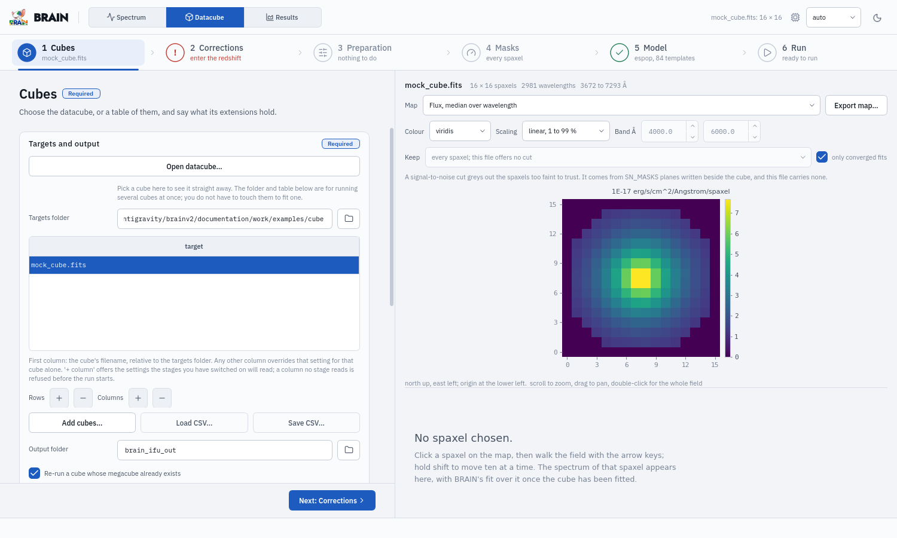
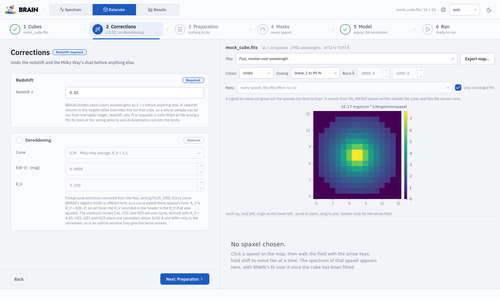
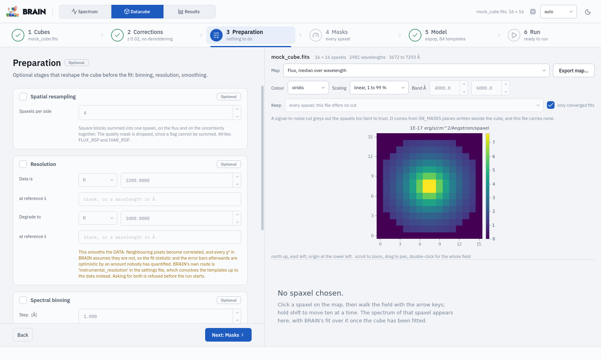
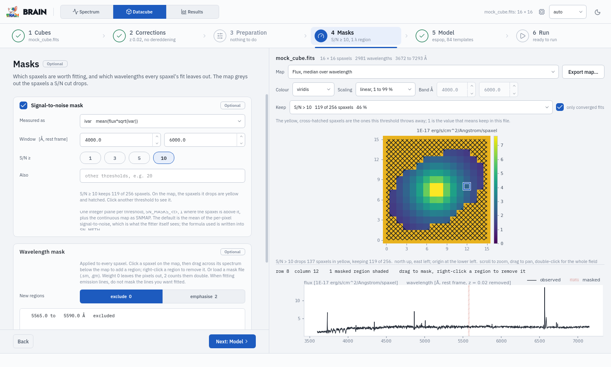
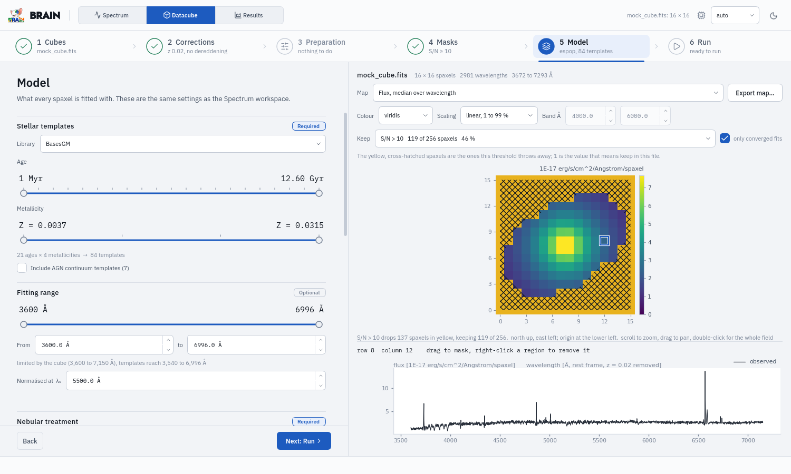
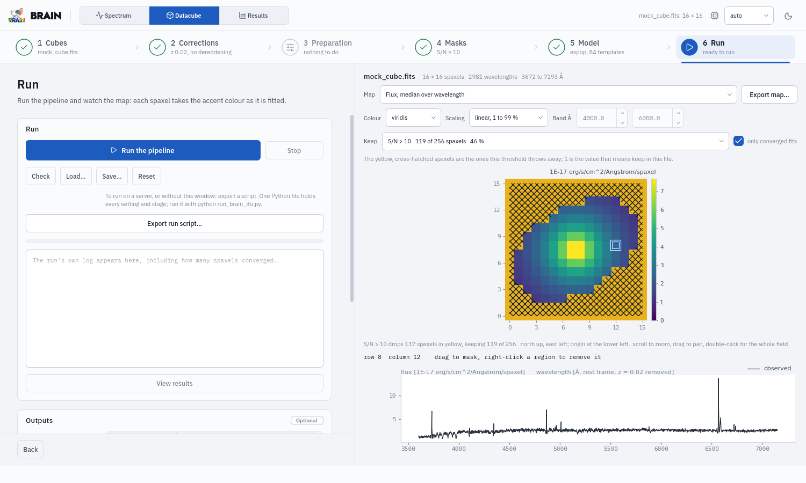
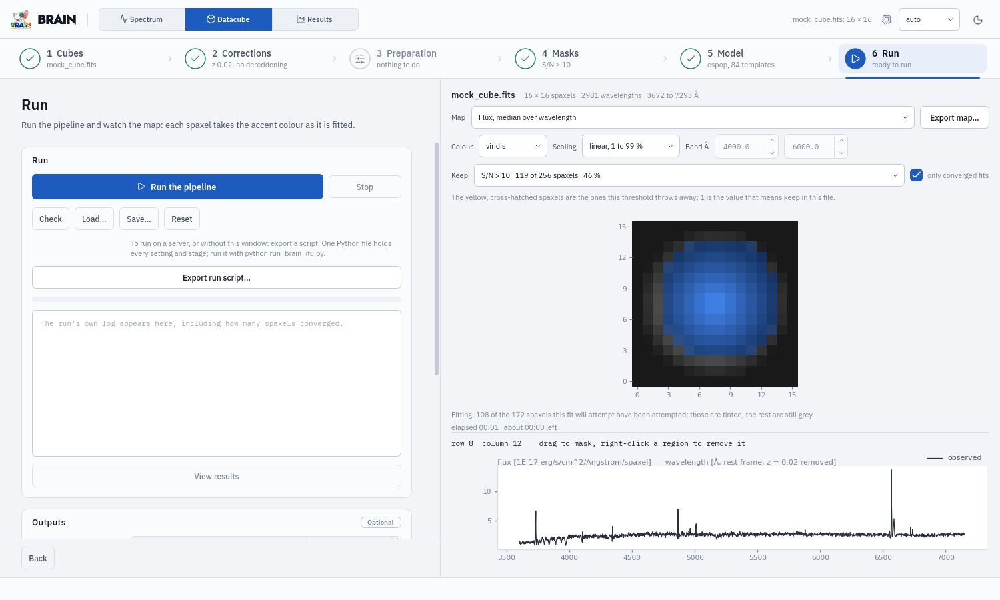

The Datacube workspace#
Six steps: Cubes, Corrections, Preparation, Masks, Model, Run. The right side shows the cube: a map, and under it the spectrum of the chosen spaxel.
1. Cubes (required)#

- Targets and output
Open datacube… picks a FITS cube and shows it. The targets table lists the cubes a run fits; its first column is the file (relative to Targets folder) and every other column overrides one setting for that cube alone, e.g.
redshift,ebv,mask file(Datacubes). Add cubes…, Load CSV…, Save CSV… and the row and column buttons edit it. Output folder is where megacubes go; Re-run a cube whose megacube already exists and Record the pipeline inside each megacube are what they say.- Input extensions
the names of the cube’s Flux, Uncertainty and Quality mask extensions, and what the uncertainty is (inverse variance, variance, error, inverse error). MaNGA:
FLUX,IVAR(inverse variance),MASK.- Wavelength scale
air or vacuum; required in a line-fitting mode, not needed in
spop.
On the map: Map chooses what is drawn (the collapsed flux, or any plane the file has); Colour and Scaling how; Band Å the window a collapsed map averages over; Export map… writes it as an image and FITS. Scroll to zoom, drag to pan, click a spaxel.
2. Corrections#

- Redshift (required)
the galaxy’s z; wavelengths are divided by 1 + z before anything else. 0 for a cube already at rest. A
redshiftcolumn in the targets table answers it per cube. A cube fitted at the wrong z puts its stars at the wrong velocity, so a blank redshift is refused.- Dereddening (optional)
the Milky Way’s reddening: Curve, E(B−V), R_V.
3. Preparation (optional)#

Stages that reshape the cube before the fit, each off until ticked. Every one changes the data, so none runs by default.
- Spatial resampling
bin n x n spaxels into one, for signal-to-noise.
- Resolution
degrade the data from its resolution (R, a FWHM or a sigma in Å, at a reference wavelength) to a coarser one. It correlates the noise; BRAIN’s own route is to match the templates to the data (
instrumental_resolution), and using both is refused.- Spectral binning
resample the wavelength axis to a coarser step.
- Butterworth filter
a spatial low-pass filter (order, range) at every wavelength, It spreads each spaxel’s light over its neighbours.
4. Masks (optional)#

- Signal-to-noise mask
which spaxels to fit. Measured as chooses the S/N estimator, Window the rest-frame range it is measured over, and the 1, 3, 5, 10 chips (and Also) the thresholds. Clicking a threshold shows on the map the spaxels it would drop, yellow and hatched, and how many it keeps. The fit then fits the spaxels of one threshold (Datacube fit, Model step).
- Wavelength mask
wavelengths left out of every spaxel’s fit. Click a spaxel, then drag on its spectrum under the map to add a region; right-click one to remove it. Load mask file… (
.sm,.gm), Standard optical, Save mask…, Remove selected, Clear all. Masks are in the rest frame, so the redshift must be entered first.
5. Model#

The same Model panel as the Spectrum workspace. Selecting a cube sets the fitting range to all of the cube’s rest-frame range that the templates cover (again when its redshift changes, unless you have edited the range since); type a narrower range and λ₀ there. Then Datacube fit: Fit these spaxels (every spaxel with data, or S/N > t for one of the S/N masks) and Batch size (automatic by default; see Speed, GPUs and CPUs).
6. Run#

Run the pipeline checks everything, then runs; Stop ends it (the megacubes already written stay). Check validates without running, with every problem marked in the panel it belongs to; Load… and Save… read and write the pipeline; Reset returns to the defaults. Export run script… writes the whole run as one Python file for a terminal or a server. Saved in the folder that holds the cubes, it uses paths relative to that folder, so the folder can be copied to a server and the script run there; files outside the folder are named when you export (One file per run). The log of the run appears in the box below; View results opens the finished megacube in the Results workspace.
While it runs, the map shows the galaxy in grey and each spaxel turns blue, at its own brightness, as it is fitted, with a brief flash; the line under the map counts the spaxels done, the elapsed time and an estimate of the remaining time.

Outputs sets the population bins (the age bins of the PoPBins maps;
MaNGA bins restores the default six) and the step of the linear grid
FLXOBS and FLXSYN are written on.